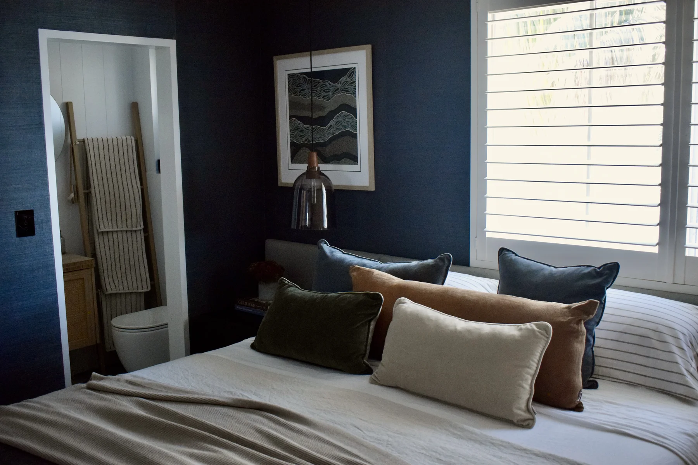
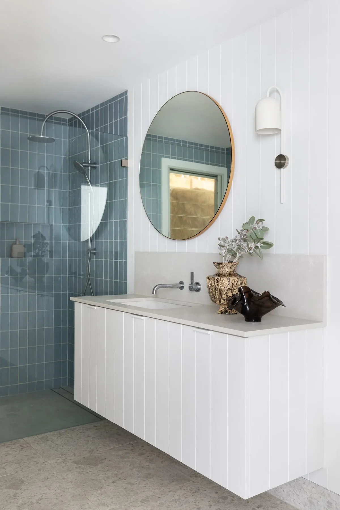

What Does an Interior Decorator Do?
An interior decorator focuses on the aesthetics of a space as it already exists. Their work is about furniture, colour, textiles, artwork and styling, layering the right pieces into a room to make it feel finished and cohesive. Decorating does not typically involve changing a room's layout, structure or services, and in most parts of Australia it is an unregulated title, meaning anyone can call themselves a decorator regardless of formal training.
If your home already works well and simply needs to look and feel considered, a decorator's skill set is usually the right fit.
What Does an Interior Designer Do?
An interior designer works at a deeper level. Alongside aesthetics, design also considers space planning, functionality, and how a room needs to perform for the people living in it, which can extend into layout changes, joinery, lighting design, and coordinating with builders and trades. Good design starts with how you actually live, then resolves the aesthetic decisions within that framework.
If you are renovating, reconfiguring a floorplan, or starting from a blank canvas, this is the level of service you need.


Design work often involves reworking layout and function, as with this Dee Why parents' retreat.
Decoration and styling bring a finished space together, layer by layer.
Where the Two Roles Overlap
In practice, the line between the two is rarely as clean as the definitions suggest. Most full-service studios, ours included, work across both, resolving the underlying function of a space and then styling it with the same considered eye. A project might start with a design decision about where a wall comes out, and finish with a decorating decision about which lamp sits on which side table. The two disciplines work best together, not apart.
Which One Does Your Project Need?
As a general guide, reach for a decorator if your home's bones already work and you want it to look and feel better. Reach for a designer if you are renovating, changing a layout, or need someone to manage the practical and structural side of a project alongside the aesthetics.
Many clients are not entirely sure which category their project falls into, and that is completely normal. It is exactly the kind of question an Initial Consultation is designed to answer.
How The Style Workshop Works
We offer both design and decoration, tailored to what each project genuinely needs. Some clients come to us with a full renovation and need design input from the earliest planning stages. Others have a finished, well-built room that simply needs a decorator's hand to bring it together. Our packages are structured to flex across that whole range, from a single Room Edit through to a fully managed Signature Styling Experience. Curious about cost too? See our guide to interior designer fees in Sydney.